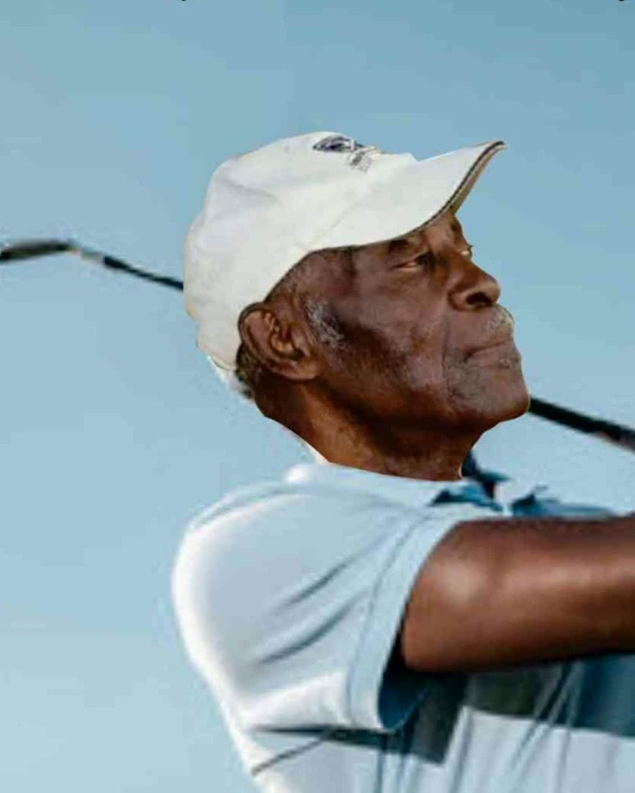

Students. One shared experience.
Fifty high school students attended the Florida Classic in November 2024 through the Foundation’s Annual University Experience.
Explore our work ↗A Highlands County legacy
In honor of Robert C. Saffold Sr.Teacher. Coach. Hall of Fame golfer.
His work brought young people to college campuses and golfers together across Florida. His son’s Foundation carries that spirit forward.
Meet the man behind the mission
5th Annual Memorial Charity Golf Tournament
Golf Hammock, Sebring · Saturday · 8 AM shotgunThe work continues
Supporting disadvantaged youth in Highlands County, through the Annual University Experience, school supplies and community support.
Fifty high school students attended the Florida Classic in November 2024 through the Foundation’s Annual University Experience.
Explore our work ↗The Foundation takes part in the Lakeshore Mall backpack drive, helping bring school supplies to local students.
Offer your time ↗The Memorial Charity Golf Tournament brings the game Robert Sr. loved together with the Foundation’s youth mission.
Become a sponsor ↗A place in golf’s history
National Black Golf Hall of Fame, Class of 1996.
African American Golfers Hall of Fame, 2014.